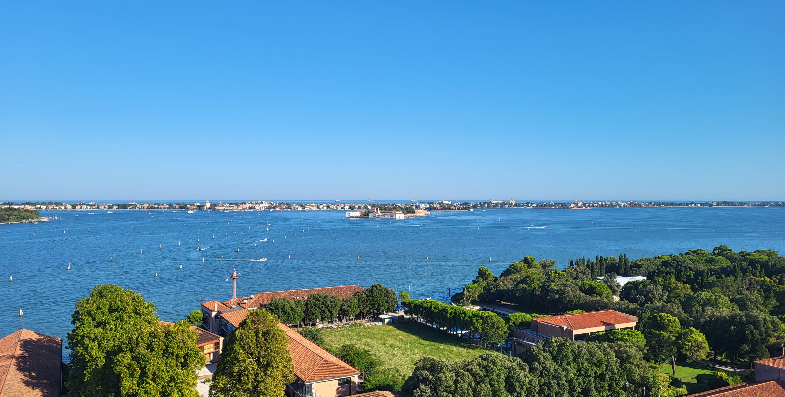

Teaching
- Co-supervisor of 5 summer research undergraduates from the Mathematical Tripos at The University of Cambridge (SRIM programme), Topic: Algorithmic Stability, June 2026 - August 2026
- Examples class lead for Part III students at The University of Cambridge, Course: Robust Statistics, February 2026 - May 2026
- Supervision of a Part III student at The University of Cambridge, Course: Modern Statistical Methods, May 2025
- Undergraduate teaching assistant for year 1 students at Imperial College London, Course: Linear Algebra and Groups, October 2022 - April 2023